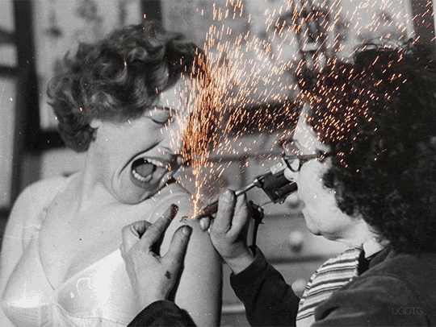
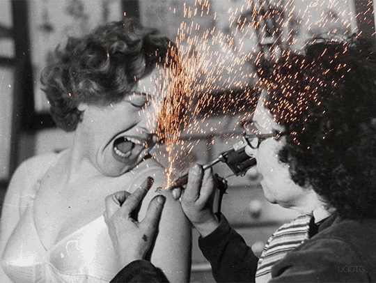

Pourquoi choisir les gifs?
Un jouet optique qui convoque l histoire de l image animee
Le retour en force des gif dans les messages echanges par les internautes à la cadence stroboscopique (petits personnages fictionnels, breves extraits culte du cinema, mimiques de celebrites, etc.) convoque l imaginaire des premieres images animées qui frappaient de stupeur… Au XVIIIe siecle, les "jouets optiques" qu’on appelait aussi des montreurs d images ambulants, proposaient des caisses à travers lesquelles le spectateur pouvait apercevoir des scenes lumineuses edifiantes. Au XIXe siecle le praxinoscope d Emile Reynaud (1877), le fusil chronophotographique d Etienne Marey (1882) ou le plus connu kinetoscope de Thomas Edison (1891) confirment cette fascination des hommes pour les représentations animees. Ce n est cependant qu en 1895 que les essais de figuration du mouvement aboutissent avec le fameux cinematographe des freres Louis et Auguste Lumière.
Le gif, un mini récit de l éternel
Le gif par son caractère en boucle rappelle ces images d’avant les débuts du cinéma. Notamment le Kinétoscope, cette fameuse "roue de la vie", qui proposait une bande images dans un tambour offrant un spectacle cyclique et limité à une douzaine d’images. Le gif est en cela un jouet optique dans la même logique captivante de la "répétition infinie". Il n’est donc pas surprenant que les GIFs amateurs les plus partagés sur Tumblr, twitter, Snaptchat, Google + et Facebook isolent des séquences cultes de films ou de séries, ou illustrent de manière caricaturale des réactions courantes par ces extraits. Un exemple récent assez probant est le gif hommage à l'annonce de la mort de David Bowie qui a fait le tour des réseaux sociaux. Cette image animée, créée il y a un an par une jeune illustratrice britannique fan, reprend les 29 looks différents du chanteur sur plus de quarante années de carrière.
Le gif, un mini récit de l éternel
Une renaissance avec la génération Z L’apparition des réseaux sociaux change la donne. Elle relance le format en modernisant son image poussiéreuse. En 1993, le navigateur web Mozaic, qui deviendra Netscape, permet au gif de se répandre d’autant plus facilement que le format jpeg fait son entrée en ligne un an plus tard, en 1994, sur Netscape. Le gif connaît alors une renaissance avec la génération Z née après 1995, qui succède à la génération Y et qui n’a jamais connu de monde sans réseaux. C’est la "génération C" : Communication, Collaboration, Connexion et Créativité. Celle des écrans qui "imagent" sa vie, l’image condensant ce qui échappe aux mots. Les plateformes de re-blogging comme Tumblr remettent au goût du jour le gif animé. À tel point qu’à partir de 2012, il revient en force et essaime sur les médias sociaux, dans les courriels ou même certains MMS. Grâce à Google + et Twitter, qui supportent bien ce format, le gif se démocratise.